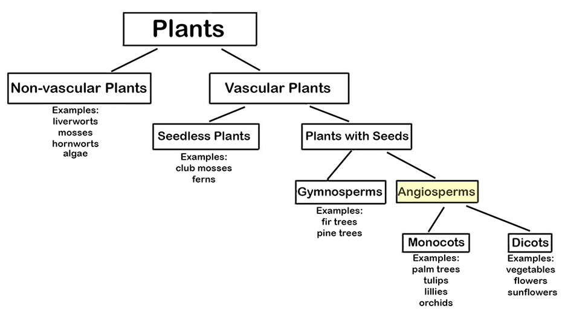
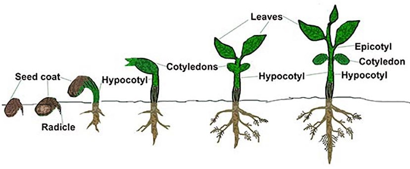

What are Angiosperms? Angiosperms are vascular plants with flowers that produce seeds. The seeds are inside a protective layer (such as a fruit). An interesting fact about angiosperms is that they did not exist until after mammals had evolved. So, earlier mammals did not get to enjoy flowers like we do!

Types of Angiosperms. As shown in the plant taxonomy tree below, there are two general types of Angiosperms: Monocots and Dicots:
Monocots are angiosperms whose seeds have only one leaf inside of the shell, called a cotyledon (pronounced "Kaw-ta-LEE-don"). (“Mono” means “one” and “cot” is short for “cotyledon.”) This cotyledon leaf is like a “starter” leaf that provides nutrients to the growing plant until the “final” leaves grow and start making food. The cotyledon shrivels and dies once that happens. Examples of monocots are grasses, tulips and lilies. Monocots have petals in multiples of three (3, 6, 9, etc.) with long slender leaves. Monocots tend to have fibrous roots, but the roots are not deep.
Dicots are angiosperms with two seed leaves, or cotyledons. (“Di” means “two” and “cot” is short for “cotyledon.”) Some dicot angiosperms are roses, dandelions, sunflowers, and most of the flowers we see every day! Trees such as the maple and oak are dicots. Food plants like beans and apples are also dicots. These flowers have four or five petals (or multiples of four and five). Their leaves are usually wide with branching veins for carrying water. The picture below shows the development of a dicot (bean) plant from a seed to a young plant.
The picture above shows a “dicot” bean seed growing into a young bean plant. There are two “starter leaves,” or cotyledons, for bean plants. This is easiest to see in the two rightmost images.
The diagram below shows differences between monocots and dicots, including the embryos, vein pattern in the leaves, stems, roots and flowers.


***Note for Teachers: You can access more information about this website and find other resources for science inquiry on the ISP Tutor website.
©2021 Klahr Lab, Carnegie Mellon University. All Rights Reserved
Carnegie Mellon University | Dept. of Psychology | 5000 Forbes Ave. | Pittsburgh, PA 15213 The TED project was funded in part by the Institute of Education Science (IES), Grant R305H060034, and in part by the National Science Foundation, Grant SBE035442. The ISP Tutor project is funded by IES, Grant R305A170176.
The research reported here was supported by the Institute of Education Sciences, U.S. Department of Education, through Grant R305A170176 to Carnegie Mellon University. The opinions expressed are those of the authors and do not represent views of the Institute or the U.S. Department of Education.